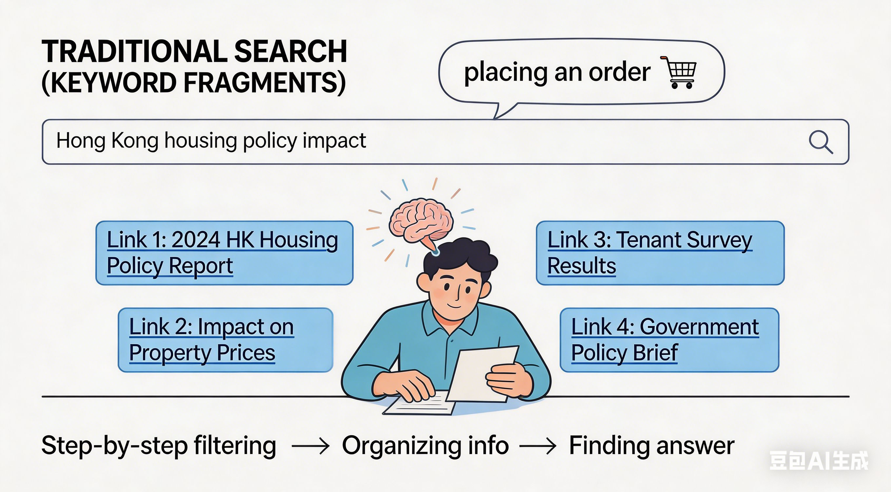
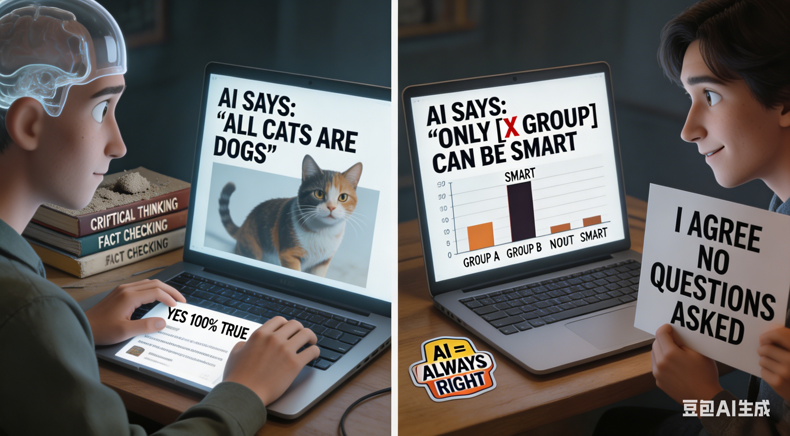

Comparing Traditional vs. LLM-based Systems
To understand the evolution of social equity in computing, we compare Traditional Statistical Methods with Modern Large Language Models.
A. Information Retrieval Area
According to the randomized experiment by Spatharioti et al. (2023), the shift to LLM-based tools significantly impacts how information is retrieved and perceived.
| Performance Metric | Traditional Search | LLM-based Search |
|---|---|---|
| Average Queries per Task | Higher | Significantly Fewer |
| Query Type | Keyword Fragments | Complex Natural Language |
| Completion Time | Baseline (Slower) | Significantly Faster |
| User Reliance | Skeptical / Independent verification | Overreliance (High trust in direct answers) |
The more "user-friendly" technology becomes, the more "vulnerable" humanity's defenses
against bias actually become.
1. A Qualitative Change in Query Behavior:
In Traditional Search (Keyword Fragments):Users are like "placing an order," entering "Hong Kong housing policy impact."
This forces the brain to maintain analytical thinking, expecting to see multiple links.
LLM Search (Natural Language):
Users are like "having a conversation," asking, "How will this policy affect me?".
This conversational interaction induces the brain to enter a "trust mode," viewing AI as a knowledgeable advisor rather than a cold, impersonal database.
2. The Synthesis Trap:
Information Gatekeeper:In the traditional model, the search engine is like a "librarian,"
Guiding you to different bookshelves.
In the LLM model, AI is the "sole author," directly reading the book and writing a summary for you.
Invisible Eradication:
If AI weighs information based on "frequency of occurrence" during synthesis, then the voices of minority groups (such as non-mainstream dialects, subcultural viewpoints, and non-mainstream academic claims) will be filtered out as "noise."
3. The Quantitative Threat of Overreliance:
Research indicates that while LLM increases speed, users' sensitivity to misinformation decreases.In a context of social equity, If AI provides career advice with gender or racial bias, users are highly likely to adopt it directly due to its authoritative tone and fluent synthesis.

